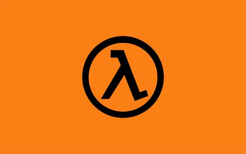

サイバー犯罪の標的となっている『Bitcoin』

[ PR ]
二日前、ビットコインが開いたパンドラの箱 新型犯罪の脅威という記事が日経のウェブニュースに投稿されました。
この記事は偶然、GOM Playerのウイルスについての記事を書いたときに参考にした、ラックという会社のCTOの記事でした。
当ブログでは、この記事で紹介されている内容を、図解で分かりやすく説明します。
Bitcoinとは
Bitcoinとは、Satoshi Nakamotoを名乗る人物によって発表された論文、『Bitcoin: A Peer-to-Peer Electronic Cash System』という論文に基づく仮想通貨です。
仮想通貨とはいえ、日本円やドルに換金できるという特徴があります。
なぜなら、論文でその安全性が証明されているからです。一度読んでみたいものですね。
ちなみに執筆時現在のレートは、1BTC ＝ 約1000ドル ＝ 約10万円 です。
Bitcoinの仕組み
Bitcoinを入手するには、現金から換金するか、「鉱山」から発掘するかのどちらかです。
「鉱山」とは、実際にはただの数式で、前述の論文で提唱されている数式を解くことでBitcoinが得られます。
しかしそう簡単に解けるものではなく、4000台のパソコンで丸１日かけてやっと1BTCというくらいです。
Bitcoinを使った犯罪
最初に紹介した記事で紹介されている犯罪は、３つです。
パソコンを操作不能にし、ビットコインを請求する
一つ目は、不特定多数のパソコンにウイルスを送りつけ、操作不能にし、回復するには1BTCを払わせるというものです。
ここで巧みなのはビットコインを指定している点です。
何故かと言うと、日銀発行でなく、個人対個人の取引であるビットコインを使うことで、足がつきにくいからです。
パソコンにウイルスを送りつけ、ビットコインを発掘させる
２つ目は、ウイルスを使ってパソコンを感染させ、ビットコインを発掘させるというものです。
現在のレートで、4000台にウイルスを送りつければ、１日１０万円の利益なので、ウイルスは増える一方です。
しかも先程の論理で足がつきにくいので、ますます犯罪の温床となってしまいます。
ニセの換金所を作る
最後の３つ目は、ビットコイン換金所になりすまし、送信されたビットコインを盗むという単純な手口です。
実際にブログなどで被害報告があっているので、相当はびこっていると思われます。
対策
このような犯罪の温床となりつつあるビットコインですが、被害に合わないためにはどうすればいいでしょうか。
対策としては、以下の様な方法があります。
- ウイルス対策・ファイヤーウォールを万全にする
- ビットコイン換金所を使わない
- ビットコインを使わない
これくらいしかないと思います。
中国やシリコンバレーなどは換金を禁止しており、これからこういった犯罪が増えるにつれて換金が禁止されるかもしれません。
まとめ
これからどのような動向を示すかわからないBitcoinですが、安易に手を出さないというのが一番の対策かも知れません。

売り上げランキング: 3

| CoffeeScriptで理解する『関数型言語』 | |
|  | CoffeeScriptで理解する『ラムダ計算入門』 |
 | コマンドの終了時に好きな音を鳴らす方法 |
 | 年代別に見るCPUの進化 ― あなたのCPUのスコア知ってますか？ |
 | 最も優れたキーボードランキング |
[ PR ]